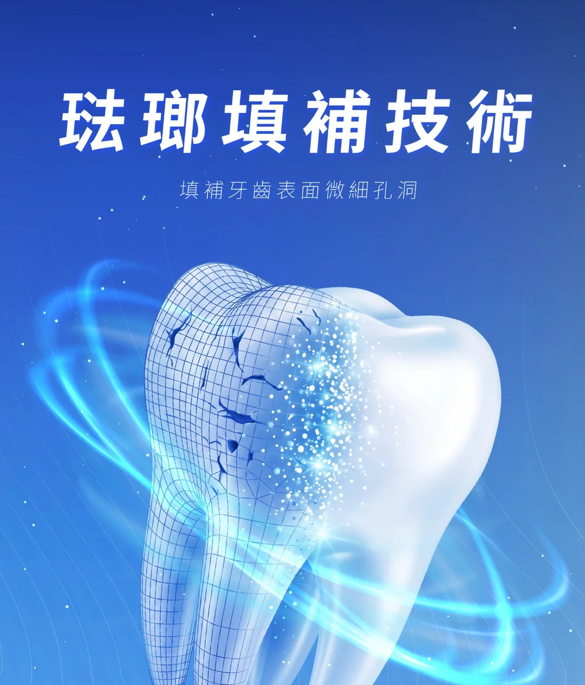
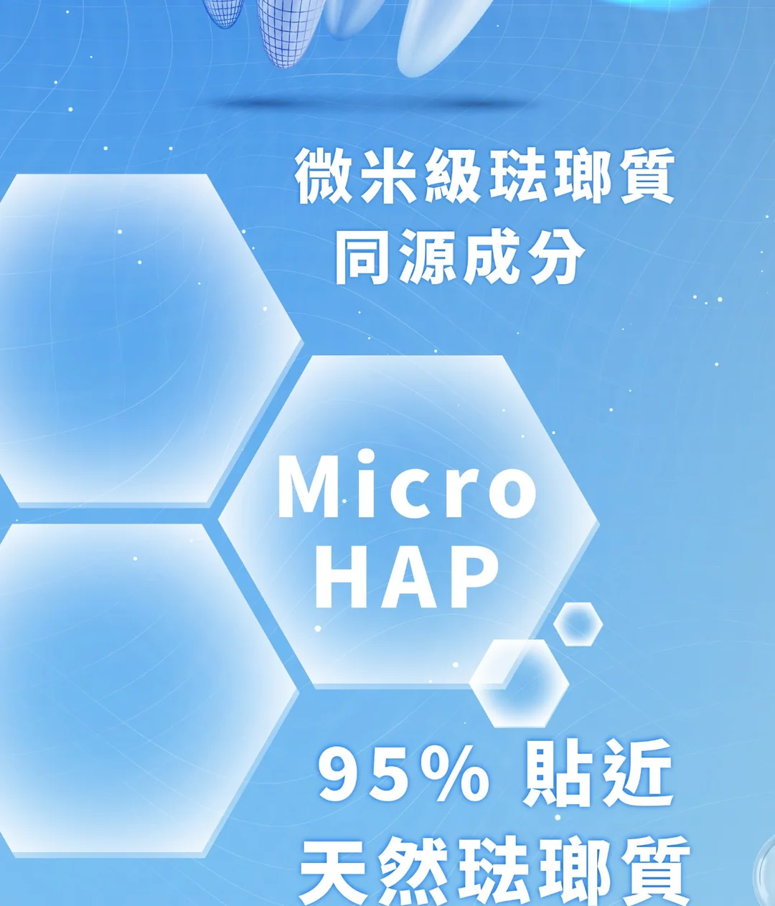
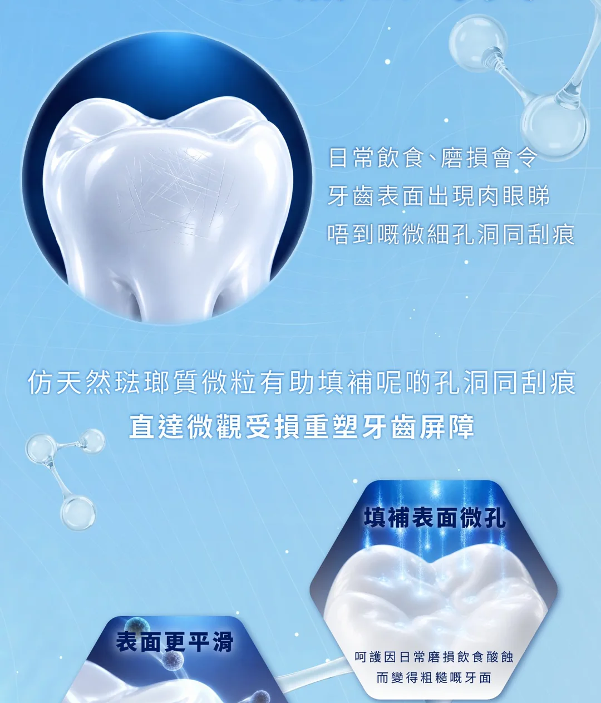
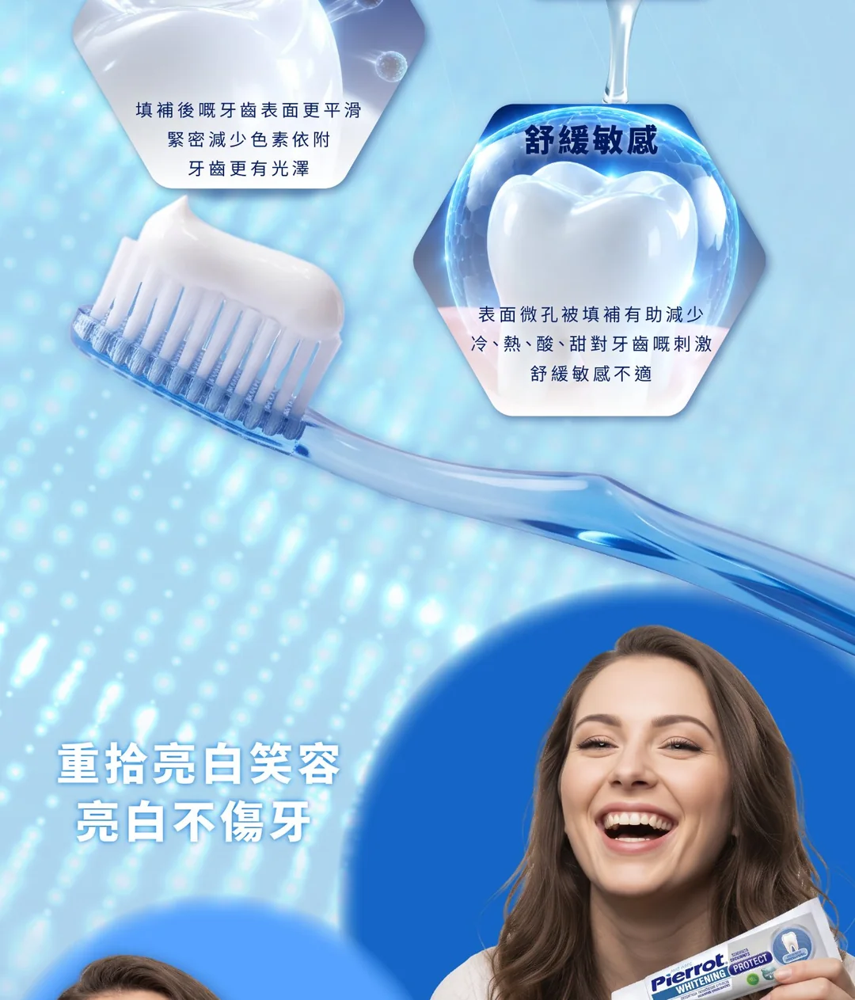
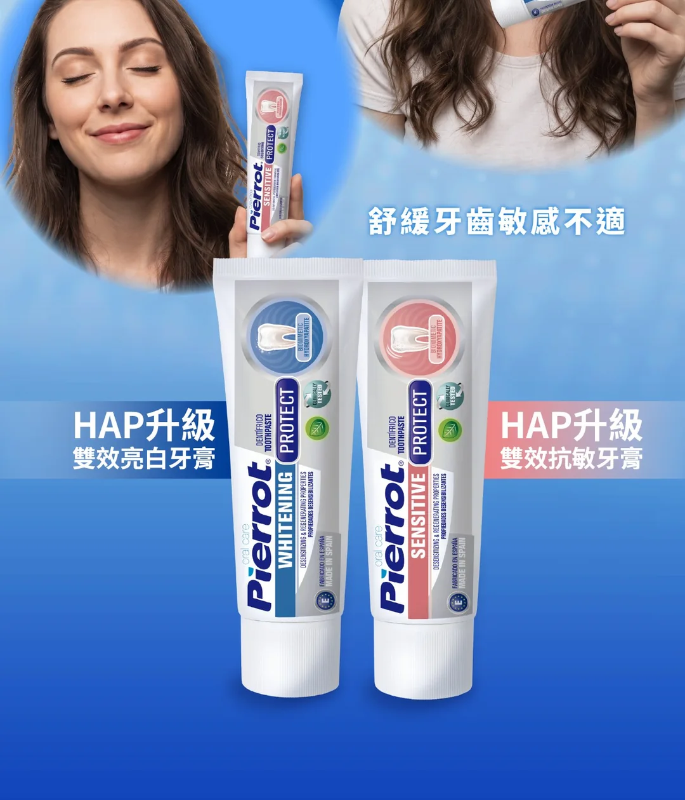

HAP 升級雙效系列：琺瑯填補技術
琺瑯填補技術，填補牙齒表面微細孔洞。微米級琺瑯質同源成分 Micro HAP，95% 貼近天然琺瑯質。
日常飲食、磨損會令牙齒表面出現肉眼睇唔到嘅微細孔洞同刮痕，仿天然琺瑯質微粒有助填補呢啲孔洞同刮痕。
填補表面微孔；表面更平滑，減少色素依附，牙齒更有光澤；舒緩敏感，減少冷、熱、酸、甜對牙齒嘅刺激。
HAP升級雙效亮白牙膏：重拾亮白笑容。HAP升級雙效抗敏牙膏：舒緩牙齒敏感不適。





常見問題
HAP 牙膏 FAQ
HAP 係咩？
HAP（Hydroxyapatite，羥基磷灰石）係牙齒琺瑯質嘅主要礦物成分。Pierrot 採用 HAP（Micro）仿天然琺瑯質微粒，結構接近牙齒琺瑯質，有助填補牙齒表面嘅微細孔洞，令牙齒表面更平滑緊密。
HAP 牙膏同一般含氟牙膏有咩分別？
一般含氟牙膏主要靠氟化物強化琺瑯質、預防蛀牙。Pierrot HAP 升級雙效系列同時含有 HAP 同氟化物：HAP 負責填補表面微細孔洞，氟化物負責強化琺瑯質、預防蛀牙，兩者各司其職。
市面上有唔少 HAP 牙膏，Pierrot 有咩唔同？
唔少 HAP 牙膏係無氟配方。Pierrot HAP 升級雙效系列保留 1450ppm 氟化物，同時加入 HAP 仿天然琺瑯質微粒，雙效配合，由西班牙原廠製造。
亮白版同抗敏版點揀？
如果最想改善牙齒對冷熱酸甜敏感，揀 HAP升級雙效抗敏牙膏，配方較溫和；如果想牙齒更光滑亮澤、去除日常茶漬咖啡漬，揀 HAP升級雙效亮白牙膏。兩樣都想兼顧？可以做我哋嘅 30 秒測驗。
可以每日用嗎？
可以。建議每天早晚刷牙最少兩次，每次約兩分鐘，持續使用。
幾耐見效？
效果因人而異。建議配合正確刷牙習慣，持續每日使用。如牙齒敏感持續或加劇，請諮詢牙醫。
小朋友可以用嗎？
HAP 升級雙效系列係成人配方，12 歲以下兒童請在成人監督下使用。2 歲或以上小朋友，可以揀我哋嘅兒童啫喱牙膏。